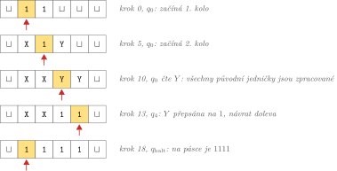
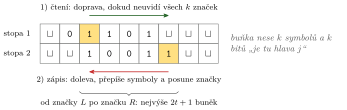
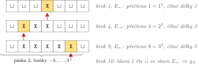
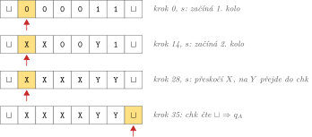
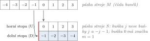

1.7 Úlohy navíc¶
Každá úloha zadá jazyk množinou s příklady a ve dvou nebo třech částech chce stroj jiného typu – deterministický jednopáskový, dvoupáskový v čase \(O(n)\), nedeterministický s omezenou délkou větví a deterministický se vstupní páskou jen pro čtení a pracovním prostorem \(O(\log n)\). Opírají se o oddíl 1.4, o cvičení 1.6 a o postup A.3.1; nedeterminismus je látka kapitoly 4 a logaritmický prostor kapitoly 12. Pododdíl 1.7.4 přidává devět úloh z jiné sbírky (úlohy 1.9–1.17): pět strojů na úrovni testu (počty symbolů na jedné pásce, sčítání na více páskách, kopírování) a čtyři těžší konstrukce (převod unárního zápisu na binární a zpět, prvočísla, jednostranná páska, stroj bez kroků na místě). Úlohy 1.9–1.11 chtějí navíc stroj jiného typu (dvě pásky, nebo logaritmický prostor).
Neoficiální úlohy
Úlohy v tomto oddílu nejsou oficiální zadání předmětu. Jsou to procvičovací úlohy navíc k látce kapitoly. Každý stroj s úplnou přechodovou funkcí z úloh 1.1–1.8 (jednopáskové, dvoupáskové i nedeterministický stroj z úlohy 1.2, u něj všechny větve) byl naprogramován přechod po přechodu a odsimulován na všech vstupech do délky 9 až 14 (unární vstupy do délky 2599); výsledky byly porovnány s definicí jazyka a všechny počty kroků spočítal program. Algoritmy s logaritmickým prostorem byly naprogramovány jen s čítači a porovnány s definicí jazyka na všech slovech do délky 9 až 12 (unárně do 2999). Stejně byly ověřeny stroje z úloh 1.9–1.14 (na všech vstupech do délky 11 až 16, sčítání na všech dvojicích čísel o 1–7 bitech) včetně částí navíc a konstrukce z úloh 1.16 a 1.17 (na 3000 náhodných strojích); algoritmus z úlohy 1.15 byl porovnán s definicí prvočísla na všech slovech do délky 12.
Ve všech úlohách platí konvence skript: páska je oboustranně nekonečná, na začátku je vstup na pásce 1 obklopený symboly \(\blank\), ostatní pásky jsou prázdné a všechny hlavy stojí na první buňce vstupu. Nevykreslené přechody vedou do \(\qR\).
1.7.1 Rozcvička¶
Úloha 1.1 (\(a^ib^jc^i\) na jedné a na dvou páskách)
Uvažujte jazyk
Např. \(\varepsilon\in L\), \(b\in L\), \(ac\in L\), \(aabcc\in L\), \(abcc\notin L\), \(acb\notin L\), \(ca\notin L\).
- Popište deterministický jednopáskový Turingův stroj, který rozhoduje \(L\) v čase \(O(n^2)\). Dejte přechodovou funkci, význam stavů a odhad času.
- Popište deterministický dvoupáskový Turingův stroj, který rozhoduje \(L\) v čase \(O(n)\). Uveďte myšlenku, význam stavů a odhad času.
Řešení
a) Jednopáskový stroj v čase \(O(n^2)\)
Myšlenka. V každém kole odškrtneme první \(a\) (přepíšeme na \(X\)) a k němu první neodškrtnuté \(c\) (přepíšeme na \(Y\)), blok \(b\) přeskočíme a vrátíme se. Když \(a\) dojdou, zbytek musí být \(b^*Y^*\) – žádné \(c\) bez partnera. Pořadí písmen hlídají stavy cesty doprava.
Přechodová funkce (položka \((q',s',D)\); pomlčka vede do \(\qR\); přechod do \(\qA\) hlavou nehýbe):
| stav | \(a\) | \(b\) | \(c\) | \(X\) | \(Y\) | \(\blank\) |
|---|---|---|---|---|---|---|
| \(s\) | \((f_a,X,\Rgt)\) | \((t,b,\Rgt)\) | – | – | \((t_Y,Y,\Rgt)\) | \(\qA\) |
| \(f_a\) | \((f_a,a,\Rgt)\) | \((f_b,b,\Rgt)\) | \((\mathit{bk},Y,\Lft)\) | – | \((f_Y,Y,\Rgt)\) | – |
| \(f_b\) | – | \((f_b,b,\Rgt)\) | \((\mathit{bk},Y,\Lft)\) | – | \((f_Y,Y,\Rgt)\) | – |
| \(f_Y\) | – | – | \((\mathit{bk},Y,\Lft)\) | – | \((f_Y,Y,\Rgt)\) | – |
| \(\mathit{bk}\) | \((\mathit{bk},a,\Lft)\) | \((\mathit{bk},b,\Lft)\) | – | \((s,X,\Rgt)\) | \((\mathit{bk},Y,\Lft)\) | – |
| \(t\) | – | \((t,b,\Rgt)\) | – | – | \((t_Y,Y,\Rgt)\) | \(\qA\) |
| \(t_Y\) | – | – | – | – | \((t_Y,Y,\Rgt)\) | \(\qA\) |
Význam stavů.
- \(s\) (počáteční):
- začátek kola, hlava na prvním neodškrtnutém symbolu (vlevo jsou jen \(X\)). \(a\): odškrtni, hledej \(c\). \(b\) nebo \(Y\): všechna \(a\) jsou spárovaná, jdi zkontrolovat zbytek. \(\blank\): přijmi. \(c\): \(c\) bez \(a\), zamítni.
- \(f_a\), \(f_b\), \(f_Y\):
- hledání prvního neodškrtnutého \(c\); index říká, ve kterém bloku hlava je (\(a\), \(b\), nebo už spárovaná \(Y\)). Z bloku \(b\) se nejde zpět do bloku \(a\), takže slovo jako \(aba\) zamítne. \(\blank\): k \(a\) chybí \(c\), zamítni.
- \(\mathit{bk}\):
- návrat doleva k nejpravějšímu \(X\), pak krok doprava a nové kolo.
- \(t\), \(t_Y\):
- kontrola, že zbytek je \(b^*Y^*\); jakékoli \(a\) nebo \(c\) zamítne.
Stroj má 7 stavů a 22 přechodů.
Čas. Kol je nejvýše \(n/2\) (každé odškrtne dvě písmena) a jedno kolo stojí nejvýše \(2n+2\) kroků (cesta doprava a zpět). Závěrečná kontrola je nejvýše \(n+1\) kroků. Celkem
Simulace na všech slovech nad \(\{a,b,c\}\) do délky 11: nejhorší jsou slova \(a^ic^i\), pro \(n=10\) s 61 kroky.
b) Dvoupáskový stroj v čase \(O(n)\)
Myšlenka. Za každé \(a\) zapíšeme na pásku 2 symbol \(X\), blok \(b\) přeskočíme a za každé \(c\) couvne hlava 2 o jeden \(X\). Slovo patří do \(L\), právě když se \(c\) a \(X\) spotřebují současně.

Stavový diagram; kde zápis není uveden, stroj symboly nemění. Nevykreslené situace vedou do \(\qR\).
Význam stavů. \(A\): čteme blok \(a\), na pásce 2 je tolik \(X\), kolik bylo \(a\), hlava 2 na první volné buňce. \(B\): čteme blok \(b\), páska 2 se nemění. Na prvním \(c\) nebo na konci slova hlava 1 stojí a hlava 2 couvne na poslední \(X\) (při \(i=0\) na \(\blank\) vlevo) – stav \(C\). \(C\): páruje \(c\) s \(X\) zprava doleva. \((\blank,\blank)\): obojí došlo současně, přijmi. \((c,\blank)\) (víc \(c\) než \(a\)), \((\blank,X)\) (méně \(c\)) a písmeno \(a\) nebo \(b\) za \(c\) vedou do \(\qR\).
Čas. Hlava 1 se pohne doprava v každém kroku kromě přechodu do \(C\) a závěrečného kroku, takže stroj udělá nejvýše \(n+2\) kroků (simulace do délky 11: přesně tolik je maximum).
1.7.2 Základní úlohy¶
Úloha 1.2 (podslovo: nedeterministicky a v logaritmickém prostoru)
Uvažujte jazyk nad abecedou \(\{a,b,\#\}\)
kde „\(x\) je podslovo \(y\)“ znamená, že \(y=uxv\) pro nějaká slova \(u\), \(v\) (\(x\) leží v \(y\) jako souvislý úsek). Např. \(ab\#bab\in L\), \(\#a\in L\), \(ba\#abab\in L\), \(aa\#aba\notin L\), \(b\#\notin L\), \(a\#b\#a\notin L\).
- Popište nedeterministický dvoupáskový Turingův stroj, který rozhoduje \(L\) tak, že každá větev jeho výpočtu na vstupu délky \(n\) skončí po \(O(n)\) krocích. Řekněte, kde stroj hádá, a zdůvodněte správnost i odhad délky větví.
- Popište deterministický Turingův stroj se vstupní páskou pouze pro čtení, který rozhoduje \(L\) s pracovním prostorem \(O(\log n)\). Zdůvodněte odhad prostoru. (Formální přechodovou funkci nepožadujeme.)
Řešení
a) Nedeterministický stroj, každá větev \(O(n)\)
Myšlenka (Guess & Verify). Slovo \(x\) zkopírujeme na pásku 2 a hlavu 2 vrátíme na začátek kopie. Pak stroj uhodne, kde v \(y\) začíná výskyt \(x\): u každého symbolu \(y\) se rozhodne „ještě ne / tady“. Od uhodnutého místa porovná \(y\) s kopií; když kopie skončí bez neshody, dočte zbytek \(y\) a přijme.
Stavy a přechody (\(x,y\in\{a,b\}\), \(s\), \(z\) libovolné symboly; nevypsané situace vedou do \(\qR\)):
- \(C\) (počáteční, kopírování):
- \((x,\blank)\to(C,\ x,x,\ \Rgt\Rgt)\). Na \(\#\): \((\#,\blank)\to(W,\ \#,\blank,\ \Rgt\Lft)\) – hlava 1 je na začátku \(y\), hlava 2 na posledním symbolu kopie.
- \(W\) (převíjení kopie):
- \((s,x)\): hlava 2 \(\Lft\). \((s,\blank)\): hlava 2 \(\Rgt\) na první symbol kopie (při \(x=\varepsilon\) na \(\blank\)), do \(G\).
- \(G\) (hádání):
- nad symbolem \(y\) nedeterministicky buď hlava 1 \(\Rgt\) a zůstaň v \(G\) („výskyt začíná dál“), nebo přejdi do \(K\) s hlavami na místě („začíná tady“). Nad \(\blank\) za \(y\) je možná jen druhá volba (to potřebuje jen \(x=\varepsilon\)). Jediné místo nedeterminismu.
- \(K\) (porovnání):
- \((x,x)\): obě hlavy \(\Rgt\). \((y,\blank)\): kopie skončila, celé \(x\) se shodovalo, do \(F\) (hlava 1 \(\Rgt\)). \((\blank,\blank)\): shoda až do konce \(y\), přijmi. Neshoda, \(\blank\) proti symbolu kopie nebo \(\#\): zamítni.
- \(F\) (dočtení):
- \((y,\blank)\): hlava 1 \(\Rgt\); \((\blank,\blank)\): přijmi; druhý \(\#\) zamítne.
Celkem 5 stavů a 38 přechodů (obě volby v \(G\) počítáme zvlášť). Strom výpočtu má pro vstup správného tvaru \(|y|+1\) větví (jedna za každý začátek).
Správnost. (\(x\#y\in L\Rightarrow\) přijme) Je-li \(y=uxv\), větev, která v \(G\) přeskočí \(|u|\) symbolů a pak zvolí „tady“, porovná \(x\) s kopií bez neshody a dočte \(v\) – přijme. (Přijme \(\Rightarrow x\#y\in L\)) Přijímající větev prošla \(C\) (vstup začíná \(x\#\)), uhodla nějaké místo \(p\) v \(y\) a \(K\) přečetlo od \(p\) celou kopii bez neshody, tedy \(y_p\cdots y_{p+|x|-1}=x\); \(F\) nebo \(K\) dočetly zbytek bez dalšího \(\#\). Tedy \(x\) je podslovo \(y\).
Délka větví. Hlava 1 se nepohne doprava jen při převíjení (\(|x|+1\) kroků), při volbě „tady“ (1 krok) a v posledním kroku (1 krok); doprava se pohne nejvýše \(n\)-krát. Každá větev má tedy nejvýše \(n+|x|+3\le 2n+2\) kroků, tedy \(O(n)\) (simulace všech větví na všech slovech nad \(\{a,b,\#\}\) do délky 9 mez potvrzuje, na \(ab\#bab\) má nejdelší větev 11 kroků).
b) Deterministický stroj s logaritmickým prostorem
Myšlenka. Vyzkoušíme všechny začátky \(i\) výskytu postupně a \(x\) porovnáme se \(y\) symbol po symbolu; na pracovní pásce jsou jen čísla.
Fáze.
- Jedním průchodem zkontroluj, že vstup obsahuje přesně jeden \(\#\) (stačí stav), a spočítej \(p=|x|\) (pozice \(\#\)) a \(q=|y|\). Je-li \(p>q\), zamítni.
- Pro \(i=0,1,\dots,q-p\) a pro \(j=0,\dots,p-1\): přečti \(x_{j+1}\) (hlavu přesuň na pozici \(j+1\)) a zapamatuj si ho ve stavu; přečti \(y_{i+j+1}\) (pozice \(p+1+i+j+1\)) a porovnej. Při neshodě zkus další \(i\); projdou-li všechna \(j\), přijmi.
- Když žádné \(i\) neprojde, zamítni.
Prostor. Na pracovní pásce jsou čísla \(p\), \(q\), \(i\), \(j\) a pomocný čítač pro přesun hlavy na danou pozici (od začátku vstupu se odpočítává, rámeček o prostoru v postupu A.3.1). Všechna jsou nejvýše \(n\), binárně tedy po \(\lceil\log_2(n+1)\rceil\) buňkách: celkem \(5\lceil\log_2(n+1)\rceil=O(\log n)\). Čtený symbol \(x_{j+1}\) se nese ve stavu. Čas je polynomiální (\(O(n^3)\) s přesuny hlavy), ale ten se nehodnotí.
Úloha 1.3 (\(a^ib^jc^id^j\) na dvou páskách)
Uvažujte jazyk
Např. \(\varepsilon\in L\), \(abcd\in L\), \(aacc\in L\), \(bd\in L\), \(abdc\notin L\), \(abbcd\notin L\), \(ad\notin L\).
- Popište deterministický dvoupáskový Turingův stroj, který rozhoduje \(L\) v čase \(O(n)\). Uveďte myšlenku, význam stavů a odhad času.
- Popište deterministický Turingův stroj se vstupní páskou pouze pro čtení, který rozhoduje \(L\) s pracovním prostorem \(O(\log n)\). Zdůvodněte odhad prostoru. (Formální přechodovou funkci nepožadujeme.)
Řešení
a) Dvoupáskový stroj v čase \(O(n)\)
Myšlenka. Za každé \(a\) zapíšeme na pásku 2 symbol \(X\), za každé \(b\) symbol \(Y\); po bloku \(a^ib^j\) je tam \(X^iY^j\). Bloky \(c\) a \(d\) pak spárujeme se značkami: hlava 2 couvne přes \(Y\), každé \(c\) odebere jedno \(X\) (hlava 2 jde doleva), pak se hlava 2 vrátí přes \(X\) k první \(Y\) a každé \(d\) odebere jedno \(Y\) (hlava 2 jde doprava). Pořadí \(a^*b^*c^*d^*\) hlídají stavy.
Stavy a přechody (\(s\) je symbol pod hlavou 1; všechny nevypsané situace vedou do \(\qR\)):
- \(q_a\) (počáteční):
- čteme blok \(a\); na pásce 2 je \(X^{i'}\) pro dosud přečtených \(i'\) písmen \(a\). \((a,\blank)\): zapiš \(X\), obě hlavy \(\Rgt\). \((b,\blank)\): zapiš \(Y\), obě hlavy \(\Rgt\), do \(q_b\). \((s,\blank)\) pro \(s\in\{c,d,\blank\}\): blok \(b\) je prázdný; hlava 1 stojí, hlava 2 \(\Lft\), do \(q_y\).
- \(q_b\):
- čteme blok \(b\), na pásce 2 je \(X^iY^{j'}\). \((b,\blank)\): zapiš \(Y\), obě hlavy \(\Rgt\). \((s,\blank)\) pro \(s\in\{c,d,\blank\}\): hlava 1 stojí, hlava 2 \(\Lft\), do \(q_y\). \((a,\blank)\): \(a\) za \(b\), zamítni.
- \(q_y\):
- hlava 1 stojí na prvním symbolu za blokem \(a^ib^j\), hlava 2 couvá. \((s,Y)\): hlava 2 \(\Lft\). \((c,X)\): hlava 2 došla na poslední \(X\); první \(c\) spáruj s ním – obě hlavy \(\Rgt\Lft\), do \(q_c\). \((s,\blank)\) pro \(s\in\{d,\blank\}\): \(i=0\) a žádné \(c\) není; hlava 2 \(\Rgt\), do \(q_x\). \((c,\blank)\): \(c\) bez \(a\), zamítni; \((d,X)\), \((\blank,X)\): \(a\) bez \(c\), zamítni.
- \(q_c\):
- páruje \(c\) s \(X\) zprava doleva. \((c,X)\): hlavy \(\Rgt\Lft\). \((s,\blank)\) pro \(s\in\{d,\blank\}\): všech \(i\) symbolů \(X\) je spárováno a blok \(c\) skončil; hlava 2 \(\Rgt\), do \(q_x\). \((c,\blank)\): víc \(c\) než \(a\); \((d,X)\), \((\blank,X)\): méně \(c\) než \(a\) – zamítni.
- \(q_x\):
- hlava 2 přejíždí doprava přes \(X\) k první \(Y\), hlava 1 stojí. \((s,X)\): hlava 2 \(\Rgt\). \((d,Y)\): první \(d\) spáruj s první \(Y\), hlavy \(\Rgt\Rgt\), do \(q_d\). \((\blank,\blank)\): \(j=0\) a žádné \(d\), přijmi.
- \(q_d\):
- páruje \(d\) s \(Y\) zleva doprava. \((d,Y)\): hlavy \(\Rgt\Rgt\). \((\blank,\blank)\): obojí došlo současně, přijmi. \((d,\blank)\), \((\blank,Y)\) a jakékoli \(a\), \(b\), \(c\): zamítni.
Stroj má 6 stavů (bez \(\qA\), \(\qR\)) a 24 přechodů.

Výpočet na slově \(aabccd\in L\) (\(i=2\), \(j=1\)). Pásky začínají buňkou před vstupem, žlutě buňky pod hlavami.
Správnost. Do \(q_y\) se stroj dostane, jen když vstup začíná \(a^ib^j\); pak je na pásce 2 přesně \(X^iY^j\). Fáze \(q_y\) a \(q_c\) projdou, právě když za \(a^ib^j\) následuje přesně \(c^i\) (každé \(c\) odebere jedno \(X\) zprava, přebytek nebo nedostatek odhalí \(\blank\) proti \(c\), resp. \(X\) proti jinému symbolu). Fáze \(q_x\) a \(q_d\) projdou, právě když zbytek je přesně \(d^j\). Jiné pořadí písmen skončí v některé nevypsané situaci, tedy v \(\qR\). Stroj tedy přijme právě slova z \(L\) a vždy zastaví.
Čas. Hlava 1 se pohne doprava nejvýše \(n\)-krát (nikdy se nevrací). Kroků, kdy hlava 1 stojí, je jen přechod do \(q_y\) (1), couvání přes \(Y\) (nejvýše \(j\)), přechod do \(q_x\) (1), přejezd přes \(X\) (nejvýše \(i\)) a závěrečný krok (1). Protože \(i+j\le n\),
Na slovech z \(L\) je to přesně \(n+i+j+3=\tfrac32n+3\) kroků (na \(aabccd\) dvanáct), nejhorší jsou slova \(b^n\) s \(2n+3\) kroky (ověřeno simulací na všech slovech nad \(\{a,b,c,d\}\) do délky 10).
b) Logaritmický prostor
Fáze. (1) Jedním průchodem zkontroluj, že vstup má tvar \(a^*b^*c^*d^*\): stačí konečný automat v řídicí jednotce (stav si pamatuje, ve kterém bloku je, a zamítne písmeno z dřívějšího bloku). (2) Druhým průchodem spočítej čtyři čísla \(A\), \(B\), \(C\), \(D\) – počty \(a\), \(b\), \(c\), \(d\) – jako binární čítače na pracovní pásce. (3) Přijmi, právě když \(A=C\) a \(B=D\) (porovnání bit po bitu).
Prostor. Čtyři čítače s hodnotami nejvýše \(n\), každý na \(\lceil\log_2(n+1)\rceil\) buňkách: \(4\lceil\log_2(n+1)\rceil+O(1)=O(\log n)\). Kontrola tvaru prostor nepotřebuje. Unární kopie bloku (jako značky \(X\) v části a) by stála \(\Theta(n)\) buněk – to v logaritmickém prostoru nejde.
Úloha 1.4 (stejně \(a\), \(b\) i \(c\) v libovolném pořadí)
Uvažujte jazyk nad abecedou \(\{a,b,c\}\)
kde \(\#_a(w)\) je počet výskytů \(a\) ve \(w\). Např. \(\varepsilon\in L\), \(abc\in L\), \(cba\in L\), \(bacacb\in L\), \(ab\notin L\), \(aabc\notin L\), \(abcc\notin L\).
- Popište deterministický jednopáskový Turingův stroj, který rozhoduje \(L\) v čase \(O(n^2)\). Dejte přechodovou funkci, význam stavů a odhad času.
- Popište deterministický dvoupáskový Turingův stroj, který rozhoduje \(L\) v čase \(O(n)\). Uveďte myšlenku, význam stavů a odhad času.
- Popište deterministický Turingův stroj se vstupní páskou pouze pro čtení, který rozhoduje \(L\) s pracovním prostorem \(O(\log n)\). Zdůvodněte odhad prostoru. (Formální přechodovou funkci nepožadujeme.)
Řešení
a) Jednopáskový stroj v čase \(O(n^2)\)
Myšlenka. V jednom kole odškrtneme (přepíšeme na \(X\)) jedno \(a\), jedno \(b\) a jedno \(c\), ať leží kdekoli. Kolo začne prvním neodškrtnutým symbolem a stav si pamatuje množinu \(S\) písmen, která už v kole odškrtl. Když kolo najde všechna tři písmena, hlava se vrátí na začátek; když narazí na konec slova dřív, zamítne. Slovo, kde zbývají jen \(X\), přijme.
Přechodová funkce (pomlčka vede do \(\qR\); přechod do \(\qA\) hlavou nehýbe). Pro každou neprázdnou vlastní podmnožinu \(S\subsetneq\{a,b,c\}\) je stav \(h_S\); tabulka uvádí jen \(h_a\) a \(h_{ab}\), ostatní vzniknou záměnou písmen.
| stav | \(a\) | \(b\) | \(c\) | \(X\) | \(\blank\) |
|---|---|---|---|---|---|
| \(s\) | \((h_a,X,\Rgt)\) | \((h_b,X,\Rgt)\) | \((h_c,X,\Rgt)\) | \((s,X,\Rgt)\) | \(\qA\) |
| \(h_a\) | \((h_a,a,\Rgt)\) | \((h_{ab},X,\Rgt)\) | \((h_{ac},X,\Rgt)\) | \((h_a,X,\Rgt)\) | – |
| \(h_{ab}\) | \((h_{ab},a,\Rgt)\) | \((h_{ab},b,\Rgt)\) | \((\mathit{bk},X,\Lft)\) | \((h_{ab},X,\Rgt)\) | – |
| \(\mathit{bk}\) | \((\mathit{bk},a,\Lft)\) | \((\mathit{bk},b,\Lft)\) | \((\mathit{bk},c,\Lft)\) | \((\mathit{bk},X,\Lft)\) | \((s,\blank,\Rgt)\) |
Význam stavů.
- \(s\) (počáteční):
- začátek kola; hlava jde přes \(X\) k prvnímu neodškrtnutému symbolu. Ten odškrtne a přejde do \(h_a\), \(h_b\) nebo \(h_c\). Na \(\blank\) je vše odškrtnuto: přijmi.
- \(h_S\):
- v kole už jsou odškrtnuta písmena z \(S\). Písmeno z \(S\) a \(X\) přeskočí, písmeno mimo \(S\) odškrtne; doplní-li tím trojici, jde do \(\mathit{bk}\). Na \(\blank\) chybí k trojici písmeno, tedy počty nejsou stejné: zamítni.
- \(\mathit{bk}\):
- návrat na \(\blank\) před slovem, krok doprava a nové kolo.
Stroj má 8 stavů (\(s\), šest stavů \(h_S\), \(\mathit{bk}\)) a 34 přechodů.
Správnost. Každé úplné kolo odškrtne přesně jedno \(a\), \(b\) a \(c\), takže rozdíly počtů neodškrtnutých písmen se nemění. Je-li \(w\in L\), kola pokračují, dokud nezbudou jen \(X\), a \(s\) přijme. Je-li \(w\notin L\), některé písmeno dojde dřív než jiné; první kolo, které ho nenajde, skončí na \(\blank\) ve stavu \(h_S\) a zamítne.
Čas. Úplných kol je nejvýše \(n/3\) a každé má nejvýše \(2n+2\) kroků (doprava nejvýše na pozici \(n\), zpět na \(\blank\) a krok doprava). Poslední kolo, které přijme nebo zamítne, má nejvýše \(n+1\) kroků. Celkem
Simulace na všech slovech do délky 10 odhad potvrzuje; na \(a^5b^5c^5\) (\(n=15\)) stroj udělá 146 kroků.
b) Dvoupáskový stroj v čase \(O(n)\)
Myšlenka. Čítačem je poloha hlavy 2. Na začátku zapíše stroj na pásku 2 značku \(\#\) (nula čítače). V první fázi jde hlava 2 za každé \(a\) doprava a za každé \(b\) doleva, \(c\) ignoruje. Na konci vstupu stojí hlava 2 o \(\#_a-\#_b\) buněk vpravo od \(\#\), takže \(\#_a=\#_b\), právě když čte \(\#\). Druhá fáze stejně porovná \(a\) s \(c\). Je to trik z typové úlohy Typová úloha 1.3 [6 bodů], jen použitý dvakrát.

Stavový diagram: \(x\) je v přechodu z \(p_0\) libovolný symbol vstupu nebo \(\blank\), ve smyčce stavu \(R\) jen symbol vstupu (\(a\), \(b\) nebo \(c\); na \(\blank\) přejde \(R\) do \(P_2\)), \(\cdot\) znamená \(\blank\) nebo \(\#\) na pásce 2; symboly se nepřepisují (kromě zápisu \(\#\) v prvním kroku). Nevykreslené situace, hlavně \((\blank,\blank)\) v \(P_1\) a \(P_2\), vedou do \(\qR\).
Význam stavů. \(p_0\): zapíše nulu čítače. \(P_1\): hlava 1 čte vstup, hlava 2 je o \(\#_a-\#_b\) (dosud přečtených) buněk vpravo od \(\#\). Na konci vstupu pokračuje jen tehdy, když hlava 2 čte \(\#\). \(R\): návrat hlavy 1 na začátek, hlava 2 zůstává na \(\#\). \(P_2\): totéž pro \(\#_a-\#_c\); na konci přijme, právě když hlava 2 čte \(\#\).
Čas. Fáze \(P_1\) a \(P_2\) mají po \(n+1\) krocích, návrat \(n+1\) krok a první krok jeden, celkem nejvýše \(3n+4=O(n)\) kroků (simulace na všech slovech do délky 10: přesně \(3n+4\) na slovech z \(L\)).
c) Logaritmický prostor
Myšlenka. Jedním průchodem vstupu spočítáme tři čísla \(A=\#_a(w)\), \(B=\#_b(w)\), \(C=\#_c(w)\) jako binární čítače na pracovní pásce (každé přečtené písmeno přičte jedničku k jednomu z nich). Pak čítače porovnáme bit po bitu a přijmeme, právě když \(A=B=C\).
Prostor. Vstupní páska se jen čte a do prostoru se nepočítá. Na pracovní pásce jsou tři čítače, každý s hodnotou nejvýše \(n\), tedy po \(\lceil\log_2(n+1)\rceil\) buňkách, oddělené symbolem \(\#\). Celkem \(3\lceil\log_2(n+1)\rceil+2=O(\log n)\). (Stačily by i dva čítače \(A-B\) a \(A-C\) se znaménkem.)
Úloha 1.5 (různý počet \(a\) a \(b\) na dvou páskách)
- Sestrojte deterministický dvoupáskový TS, který rozhoduje \(L=\{\,a^ib^j \mid i,j\ge0,\ i\neq j\,\}\) v čase \(O(n)\). Uveďte myšlenku, význam stavů a odhad času.
- Proč nestačí vzít správný stroj pro \(\{a^nb^n\}\) a prohodit v něm \(\qA\) a \(\qR\)?
- Popište deterministický Turingův stroj se vstupní páskou pouze pro čtení, který rozhoduje \(L\) s pracovním prostorem \(O(\log n)\). Zdůvodněte odhad prostoru. (Formální přechodovou funkci nepožadujeme.)
Řešení
a) Myšlenka. Jako v Cvičení 1.2: za každé \(a\) zapíšeme na pásku 2 symbol \(X\) a za každé \(b\) posuneme hlavu 2 o jeden \(X\) doleva. Přijímáme, když jedna strana „dojde“ dřív, a navíc hlídáme tvar \(a^*b^*\).

Stavový diagram; na hranách do \(\qA\) stroj nic nepřepisuje a hlavy stojí. Nevykreslené situace vedou do \(\qR\).
Význam stavů.
- \(q_0\) (počáteční):
- nic nepřečteno. \((a,\blank)\): zapiš \(X\), obě hlavy \(\Rgt\), do \(q_a\). \((b,\blank)\): \(i=0\) a \(j\ge1\), stačí ověřit, že zbytek jsou samá \(b\) – do \(\mathit{chk}\). \((\blank,\blank)\): prázdné slovo, \(i=j=0\), zamítni.
- \(q_a\):
- čteme blok \(a\); na pásce 2 je tolik \(X\), kolik bylo \(a\) (aspoň jedno). \((\blank,\blank)\): \(j=0<i\), přijmi. \((b,\blank)\): hlava 1 stojí, hlava 2 jde na poslední \(X\), do \(q_b\).
- \(q_b\):
- počet dosud přečtených \(b\) = počet \(X\) vpravo od hlavy 2. \((b,X)\): hlavy \(\Rgt\Lft\). \((\blank,X)\): slovo skončilo a \(X\) zbývají, \(j<i\), přijmi. \((\blank,\blank)\): \(j=i\), zamítni. \((b,\blank)\): všech \(i\) symbolů \(X\) je spárováno a přišlo další \(b\), tedy \(j>i\), pokud je tvar v pořádku – do \(\mathit{chk}\). \((a,\cdot)\): \(a\) za \(b\), zamítni.
- \(\mathit{chk}\):
- už víme \(j>i\); hlava 1 jde doprava přes \(b\). \((\blank,\blank)\): přijmi; \(a\): zamítni.
Čas. Hlava 1 se posune doprava v každém kroku kromě jediného přepnutí \(q_a\to q_b\) a posledního kroku, který jen čte. Celkem nejvýše \(n+2\) kroků (simulace na všech slovech do délky 14: maximum je přesně \(n+2\), např. \(aab\)). Každý výpočet zastaví, stroj \(L\) rozhoduje v čase \(O(n)\).
b) Stroj pro \(\{a^nb^n\}\) zamítá i slova, která vůbec nemají tvar \(a^*b^*\), např. \(ba\) nebo \(aba\). Po prohození by je přijal, a ta v \(L\) nejsou. Prohození \(\qA\leftrightarrow\qR\) dá stroj pro doplněk \(\{a,b\}^*\setminus\{a^nb^n\}\), ne pro \(L\); proto potřebujeme stav \(\mathit{chk}\) a zamítání \((a,\cdot)\) v \(q_b\). (Ověřeno: prohozený stroj chybně přijímá právě slova mimo \(a^*b^*\), nejkratší je \(ba\).)
c) Logaritmický prostor. Prvním průchodem zkontroluje stroj stavem tvar \(a^*b^*\) (po prvním \(b\) už žádné \(a\)), druhým spočítá binární čítače \(I=\#_a\) a \(J=\#_b\) na pracovní pásce a přijme, právě když se liší aspoň v jednom bitu. Dva čítače s hodnotami nejvýše \(n\) zabírají \(2\lceil\log_2(n+1)\rceil+O(1)=O(\log n)\) buněk. I tady platí poučení z b): špatný tvar slova se musí zamítnout zvlášť, nestačí porovnat počty.
Úloha 1.6 (mocniny dvojky na jedné pásce)
Uvažujte jazyk nad abecedou \(\{0\}\)
Např. \(0\in L\), \(0^4\in L\), \(0^{16}\in L\), \(\varepsilon\notin L\), \(000\notin L\), \(0^6\notin L\).
- Popište deterministický jednopáskový Turingův stroj, který rozhoduje \(L\) v čase \(O(n\log n)\). Dejte přechodovou funkci, zdůvodněte správnost a odhad času.
- Popište deterministický Turingův stroj se vstupní páskou pouze pro čtení, který rozhoduje \(L\) s pracovním prostorem \(O(\log n)\). Zdůvodněte odhad prostoru. (Formální přechodovou funkci nepožadujeme.)
Řešení
a) Jednopáskový stroj v čase \(O(n\log n)\)
Myšlenka. Opakovaně půlíme: v jednom průchodu zleva doprava škrtneme (přepíšeme na \(X\)) každou druhou zbývající nulu, tj. druhou, čtvrtou, šestou… Je-li zbývajících nul lichý počet větší než 1, číslo není mocninou dvojky; zbude-li jediná nula, je. Parita počtu nul se nese ve stavu.
Přechodová funkce (položka \((q',s',D)\)):
| stav | \(0\) | \(X\) | \(\blank\) |
|---|---|---|---|
| \(s\) (v průchodu ještě žádná \(0\)) | \((o_1,0,\Rgt)\) | \((s,X,\Rgt)\) | \(\qR\) |
| \(o_1\) (právě jedna \(0\)) | \((e,X,\Rgt)\) | \((o_1,X,\Rgt)\) | \(\qA\) |
| \(e\) (sudý počet, aspoň 2) | \((o,0,\Rgt)\) | \((e,X,\Rgt)\) | \((\mathit{back},\blank,\Lft)\) |
| \(o\) (lichý počet, aspoň 3) | \((e,X,\Rgt)\) | \((o,X,\Rgt)\) | \(\qR\) |
| \(\mathit{back}\) | \((\mathit{back},0,\Lft)\) | \((\mathit{back},X,\Lft)\) | \((s,\blank,\Rgt)\) |
Nulu, kterou stroj čte ve stavu s lichým počtem (\(o_1\), \(o\)), škrtne – je to druhá, čtvrtá… nula průchodu. Na \(\blank\) v \(s\) je slovo prázdné (\(0^0\) není v \(L\), \(2^k\ge1\)).

Výpočet na \(0^8\): páska na začátku každého průchodu (stav \(s\)). Všimni si: první nula se nikdy neškrtá, takže stroj nepotřebuje značku levého okraje – \(\mathit{back}\) se vrací až na \(\blank\) před slovem.
Správnost. Pro \(m\ge1\) platí: \(m\) je mocnina dvojky, právě když \(m=1\), nebo \(m\) je sudé a \(m/2\) je mocnina dvojky (liché \(m\ge3\) mocninou dvojky není). Průchod začínající s \(m\) nezaškrtnutými nulami skončí na \(\blank\) ve stavu podle \(m\): pro \(m=0\) v \(s\) (jen prázdné slovo), zamítne; pro \(m=1\) v \(o_1\), přijme; pro liché \(m\ge3\) v \(o\), zamítne; pro sudé \(m\ge2\) v \(e\) a škrtnuto bylo přesně \(m/2\) nul a další průchod začne s \(m/2\) nulami. Indukcí podle \(m\) stroj přijme \(0^n\), právě když \(n\) je mocnina dvojky.
Čas. Průchod tam stojí \(n+1\) kroků (přes \(n\) buněk a krok na \(\blank\)), návrat \(n+1\) kroků. Počet nul se v každém pokračujícím průchodu přesně půlí, takže průchodů je nejvýše \(\lfloor\log_2 n\rfloor+1\). Celkem
Simulace pro všechna \(n\le 2099\) odhad potvrzuje (např. \(T(8)=63\le 18\cdot4\)).
b) Logaritmický prostor
Myšlenka. Jedním průchodem spočítáme délku vstupu \(n\) do binárního čítače na pracovní pásce (vstup je nad jednopísmennou abecedou, nic jiného kontrolovat nemusíme). Číslo \(n\ge1\) je mocnina dvojky, právě když má jeho binární zápis přesně jednu jedničku; to stroj zjistí průchodem přes čítač a stavem „žádná / jedna / víc jedniček“. Prázdné slovo (\(n=0\), čítač bez jedniček) zamítne.
Prostor. Jediný čítač s hodnotou nejvýše \(n\): \(\lceil\log_2(n+1)\rceil=O(\log n)\) buněk. Počet jedniček se nese ve stavu. (Ověřeno pro všechna \(n<3000\).)
1.7.3 Těžší úlohy¶
Úloha 1.7 (druhé mocniny v lineárním čase)
Uvažujte jazyk
Např. \(\varepsilon\in L\), \(a^9\in L\), \(aa\notin L\), \(a^8\notin L\).
- Popište deterministický dvoupáskový Turingův stroj, který rozhoduje \(L\) a na vstupu délky \(n\) udělá nejvýše \(n+1\) kroků. Uveďte myšlenku, přechodovou funkci, význam stavů a zdůvodněte správnost i počet kroků. Nápověda: \(1+3+5+\dots+(2m-1)=m^2\) a páska 2 je oboustranně nekonečná.
- Popište deterministický Turingův stroj se vstupní páskou pouze pro čtení, který rozhoduje \(L\) s pracovním prostorem \(O(\log n)\). Zdůvodněte odhad prostoru. (Formální přechodovou funkci nepožadujeme.)
Řešení
a) Dvoupáskový stroj s nejvýše \(n+1\) kroky
Myšlenka. Vstup čteme po skupinách o \(1,3,5,\dots\) symbolech; po \(m\) skupinách je přečteno přesně \(m^2\) symbolů. Délku skupiny měří čítač na pásce 2: souvislý úsek symbolů \(X\), který hlava 2 přejíždí střídavě doleva a doprava. Za každé \(X\), přes které přejede, přečte hlava 1 jedno \(a\). Na konci průchodu hlava 2 připíše za úsek dvě nová \(X\) (i ta „stojí“ jedno \(a\)), takže další skupina je o 2 delší. Slovo patří do \(L\), právě když skončí přesně na konci některé skupiny. Hlava 1 se pohne doprava v každém kroku, proto stačí \(n+1\) kroků.
Přechodová funkce (\(D\in\{\Lft,\Rgt\}\), \(\bar D\) je opačný směr; všechny nevypsané situace vedou do \(\qR\)):
| stav | přechody | význam |
|---|---|---|
| \(s\) (počáteční) | \((\blank,\blank)\to\qA\); \((a,\blank)\to(E_{\Lft},\,a,X,\,\Rgt\Stay)\) | prázdné slovo je \(a^{0^2}\); jinak první skupina (1 symbol) a čítač délky 1 |
| \(E_D\) | \((\blank,X)\to\qA\); \((a,X)\to(T_D,\,a,X,\,\Rgt D)\) | konec skupiny: přečteno \(m^2\) symbolů, čítač má \(2m-1\) políček, hlava 2 stojí na jeho krajním \(X\) a další průchod půjde směrem \(D\) |
| \(T_D\) | \((a,X)\to(T_D,\,a,X,\,\Rgt D)\); \((a,\blank)\to(N_D,\,a,X,\,\Rgt D)\) | průchod přes čítač; na jeho konci připiš první nové \(X\) |
| \(N_D\) | \((a,\blank)\to(E_{\bar D},\,a,X,\,\Rgt\Stay)\) | připiš druhé nové \(X\), hlava 2 na něm zůstane a další průchod půjde opačně |
Stavy \(s\), \(E_{\Lft}\), \(E_{\Rgt}\), \(T_{\Lft}\), \(T_{\Rgt}\), \(N_{\Lft}\), \(N_{\Rgt}\), celkem 12 přechodů. Hlava 1 čte vždy \(a\) nebo \(\blank\) (vstup nad \(\{a\}\)); \(\blank\) ve stavech \(T_D\), \(N_D\) vede do \(\qR\).

Páska 2 při výpočtu na \(a^9\) na koncích skupin (žlutě buňka pod hlavou 2; hlava 1 je vždy na pozici rovné číslu kroku). Všimni si: čítač roste střídavě doleva a doprava, hlava 2 se nikdy nevrací naprázdno.
Invariant. Při vstupu do stavu \(E_D\) (\(m\ge1\)) je přečteno přesně \(m^2\) symbolů, na pásce 2 je souvislý úsek \(2m-1\) symbolů \(X\) a hlava 2 stojí na tom jeho konci, od kterého úsek pokračuje směrem \(D\). Pro \(m=1\) to zařídí přechod ze stavu \(s\) (jediné \(X\)). Platí-li invariant pro \(m\) a vstup pokračuje, přečte \(E_D\) a \(T_D\) jedno \(a\) za každé z \(2m-1\) políček úseku, \(T_D\) na \(\blank\) za úsekem připíše \(X\) a \(N_D\) další \(X\) – celkem \(2m-1+2=2m+1\) symbolů \(a\). Je přečteno \(m^2+2m+1=(m+1)^2\) symbolů, úsek má \(2m+1=2(m+1)-1\) políček a hlava 2 stojí na jeho novém konci, odkud pokračuje směrem \(\bar D\). To je invariant pro \(m+1\) ve stavu \(E_{\bar D}\).
Správnost. Je-li \(n=m^2\), dojde stroj podle invariantu po \(n\) krocích do \(E_D\) (pro \(m=0\) zůstane v \(s\)) a hlava 1 čte \(\blank\): přijme. Je-li \(m^2<n<(m+1)^2\), skončí vstup uprostřed skupiny \(m+1\), tj. hlava 1 přečte \(\blank\) ve stavu \(T_D\) nebo \(N_D\), a stroj zamítne. Přijme tedy právě slova z \(L\).
Počet kroků. Každý přechod kromě posledního (do \(\qA\) nebo \(\qR\)) posune hlavu 1 doprava a hlava 1 se za pozici \(n\) nedostane. Stroj proto udělá nejvýše \(n+1\) kroků, na slovech z \(L\) přesně \(n+1\) (ověřeno simulací pro všechna \(n\le2599\); např. \(a^9\): 10 kroků).
b) Logaritmický prostor
Myšlenka. Stejný vzorec \(1+3+\dots+(2m-1)=m^2\), jen s binárními čísly. Stroj nejdřív spočítá \(n\) do binárního čítače. Pak drží dva čítače: součet \(S\) (začíná na \(0\)) a liché číslo \(d\) (začíná na \(1\)). Dokud \(S<n\), přičte \(d\) k \(S\) a \(d\) zvětší o \(2\). Přijme, právě když skončí s \(S=n\).
Prostor. Na pracovní pásce jsou čísla \(n\), \(S\) a \(d\). Smyčka skončí, jakmile \(S\ge n\), takže \(S<n+2\sqrt n+1\le 4n+1\) a \(d\le 2\sqrt n+3\). Každé číslo má \(O(\log n)\) bitů a binární sčítání i porovnání probíhá přímo na pracovní pásce, celkem \(O(\log n)\) buněk. (Ověřeno pro všechna \(n<3000\).)
Úloha 1.8 (stejně \(a\) jako \(b\) v čase \(O(n\log n)\))
Uvažujte jazyk z typové úlohy Typová úloha 1.3 [6 bodů]
Např. \(\varepsilon\in L\), \(abba\in L\), \(aab\notin L\). Typová úloha ho rozhoduje dvoupáskovým strojem v čase \(O(n)\) a v logaritmickém prostoru; jednopáskový stroj s odškrtáváním dvojic (jako v části a) úlohy Úloha 1.4 (stejně a, b i c v libovolném pořadí)) potřebuje čas \(\Theta(n^2)\). Popište deterministický jednopáskový Turingův stroj, který rozhoduje \(L\) v čase \(O(n\log n)\). Uveďte myšlenku, význam stavů a odhad času. Nápověda: v jednom průchodu lze zjistit paritu obou počtů a zároveň oba počty zhruba rozpůlit.
Řešení
Myšlenka. Nechť \(A\) a \(B\) jsou počty dosud neškrtnutých \(a\) a \(b\). V jednom průchodu zleva doprava stroj nese ve stavu parity dosud viděných neškrtnutých \(a\) a \(b\) a škrtne (přepíše na \(X\)) první, třetí, páté… neškrtnuté \(a\) a stejně tak \(b\). Zbude \(\lfloor A/2\rfloor\) symbolů \(a\) a \(\lfloor B/2\rfloor\) symbolů \(b\).
Klíčové pozorování. Mají-li \(A\) a \(B\) různou paritu, je \(A\neq B\). Mají-li stejnou, platí \(A=B\iff\lfloor A/2\rfloor=\lfloor B/2\rfloor\) (obě sudá: \(A/2=B/2\); obě lichá: \((A-1)/2=(B-1)/2\)). Proto se vlastnost „\(A=B\)“ průchodem se shodnými paritami nezmění a průchod s různými paritami ji vyvrátí.
Stavy.
- \(z\) (počáteční):
- v tomto průchodu zatím žádné neškrtnuté písmeno. \(X\): doprava. \(a\): škrtni, do \(p_{10}\). \(b\): škrtni, do \(p_{01}\). \(\blank\): nic neškrtnutého nezbylo, \(A=B=0\): přijmi.
- \(p_{xy}\), \(x,y\in\{0,1\}\):
- viděli jsme aspoň jedno písmeno, \(x\) je parita viděných \(a\), \(y\) parita viděných \(b\). \(X\): doprava. \(a\): je-li \(x=0\), je to lichý (první, třetí…) výskyt – škrtni; jinak nech; přejdi do \(p_{(1-x)y}\). \(b\) symetricky. \(\blank\): pro \(x=y\) do \(\mathit{back}\) s pohybem \(\Lft\), pro \(x\neq y\) zamítni.
- \(\mathit{back}\):
- doleva přes \(a\), \(b\), \(X\); na \(\blank\) před slovem krok doprava a do \(z\).
Stavů je 6 (bez \(\qA\), \(\qR\)), přechodů mimo \(\qR\) je 22.

Výpočet na \(aabbab\), páska na začátku každého průchodu. Na slově \(aabbbb\) první průchod (parity \(0,0\)) nechá \(XaXbXb\) a ve druhém je \(A=1\), \(B=2\) – různé parity, zamítnutí.
Správnost. Podle pozorování platí na začátku každého průchodu: \(\#_a(w)=\#_b(w)\iff A=B\). Přijetí nastane jen při \(A=B=0\), zamítnutí jen při různých paritách, tedy \(A\ne B\). Stroj vždy zastaví: pokračující průchod nastane jen tehdy, když aspoň jedno z \(A\), \(B\) je kladné, a pak \(\max(A,B)\) klesne aspoň na polovinu (dolní celou část).
Čas. Průchod tam i zpět stojí nejvýše \(2n+2\) kroků. Po \(p\) pokračujících průchodech je \(\max(A,B)\le\lfloor n/2^p\rfloor\), takže pokračujících průchodů je nejvýše \(\lfloor\log_2 n\rfloor+1\) a s posledním průchodem nejvýše \(\lfloor\log_2 n\rfloor+2\). Celkem
(Ověřeno na všech slovech do délky 14 a na 3000 náhodných slovech délky 15–400.) Lépe to na jedné pásce nejde: jednopáskový stroj s časem \(o(n\log n)\) rozhoduje jen regulární jazyky a \(L\) regulární není – to je (nad rámec přednášky).
1.7.4 Úlohy z jiných sbírek¶
Úlohy 1.9–1.17 pocházejí ze sbírky „External Practice Bank“, kterou sestavil spolužák z volně dostupných materiálů (hlavně MFF UK). Zadání jsou česky převyprávěná, řešení jsou naše. Úlohy 1.9–1.13 odpovídají úloze 1 zápočtového testu (postup v oddílu A.3.1), úlohy 1.14–1.17 jsou těžší a jdou nad rámec testu. Platí konvence z úvodu oddílu; kde zadání předepisuje jinou, je to v něm řečeno.
K úlohám 1.9–1.13 stačí kuchařka „návrh TS“ a k úlohám 1.16 a 1.17 kuchařka „simulace“ z rámečku na začátku oddílu.
Úloha 1.9 (dvakrát víc nul, pak jedničky)
Sestrojte jednopáskový deterministický TS, který rozhoduje jazyk
nad abecedou \(\{0,1\}\) (např. \(\varepsilon,\ 001,\ 000011\in L\), ale \(0001,\ 0011,\ 0101\notin L\)). Hlava začíná na prvním symbolu vstupu. Dejte přechodovou funkci, vysvětlete, jak stroj zamítne slova špatného tvaru i slova se špatnými počty, a odhadněte počet kroků.
Popište také deterministický dvoupáskový Turingův stroj, který rozhoduje \(L\) v čase \(O(N)\), kde \(N\) je délka vstupu. Uveďte myšlenku, význam stavů a odhad času.
Zdroj: A. Maheshwari, M. Smid, Introduction to Theory of Computation, cvičení 4.1.
Řešení
Myšlenka. Jako stroj pro \(a^nb^n\) (obr. 1.9), jen jedno kolo odškrtne dvě nuly (přepíše je na \(X\)) a první neodškrtnutou jedničku (přepíše ji na \(Y\)). Za odškrtnutou jedničkou stroj ověří, že až do konce slova následují jen jedničky – tím hlídá tvar \(0^*1^*\).
Přechodová funkce (položka \((q',s',D)\); pomlčka = situace, která nenastane):
| stav | \(0\) | \(1\) | \(X\) | \(Y\) | \(\blank\) |
|---|---|---|---|---|---|
| \(s\) (začátek kola) | \((z,X,\Rgt)\) | \(\qR\) | \((s,X,\Rgt)\) | \((\mathit{chk},Y,\Rgt)\) | \((\qA,\blank,\Stay)\) |
| \(z\) (jedna nula kola odškrtnutá) | \((h,X,\Rgt)\) | \(\qR\) | – | \(\qR\) | \(\qR\) |
| \(h\) (hledá jedničku) | \((h,0,\Rgt)\) | \((t,Y,\Rgt)\) | – | \((h,Y,\Rgt)\) | \(\qR\) |
| \(t\) (za ní jen jedničky) | \(\qR\) | \((t,1,\Rgt)\) | – | – | \((\mathit{back},\blank,\Lft)\) |
| \(\mathit{back}\) | \((\mathit{back},0,\Lft)\) | \((\mathit{back},1,\Lft)\) | \((\mathit{back},X,\Lft)\) | \((\mathit{back},Y,\Lft)\) | \((s,\blank,\Rgt)\) |
| \(\mathit{chk}\) (nuly došly) | – | \(\qR\) | – | \((\mathit{chk},Y,\Rgt)\) | \((\qA,\blank,\Stay)\) |
Stavů je 6 (bez \(\qA\), \(\qR\)), přechodů mimo \(\qR\) je 17.

Výpočet na \(000011\), snímky pásky na začátku kol a na konci. Všimni si: odškrtnuté nuly tvoří souvislý začátek slova a odškrtnuté jedničky začátek bloku jedniček.
Správnost. První kolo ověří tvar: začíná-li slovo jedničkou, zamítne \(s\) (neprázdné slovo začínající \(1\) v \(L\) není); má-li slovo méně než dvě nuly na začátku, zamítne \(z\); nemá-li za nulami jedničku, zamítne \(h\) na \(\blank\); je-li za první jedničkou nula, zamítne \(t\). Po úspěšném prvním kole je tedy \(w=0^a1^b\) s \(a\ge2\), \(b\ge1\). Invariant: po \(i\) úspěšných kolech je na pásce \(X^{2i}\,0^{a-2i}\,Y^{i}\,1^{b-i}\) a hlava stojí na první buňce. Další kolo:
- \(s\) přeskočí \(X\) a čte \(0\): zbývá aspoň jedna nula. Pokud \(z\) místo druhé nuly uvidí \(Y\), je \(a-2i=1\), \(a\) je liché a \(a\neq 2b\): zamítnutí je správně. Pokud \(h\) nenajde jedničku, je \(b=i\) a \(a>2i=2b\): zamítnutí.
- \(s\) čte \(Y\): nuly došly, \(a=2i\). \(\mathit{chk}\) přijme, právě když za \(Y\) už nejsou jedničky, tj. \(b=i=a/2\).
- \(s\) čte \(\blank\) jen v prvním kole na prázdném slově (\(n=0\)): přijme.
Každé úspěšné kolo odškrtne tři symboly, takže úspěšných kol je nejvýše \(N/3\) (\(N\) = délka vstupu) a stroj vždy zastaví.
Čas. Kolo je cesta tam a zpět, nejvýše \(2N+2\) kroků; kol je nejvýše \(\lfloor N/3\rfloor+1\), celkem
Simulace na všech slovech do délky 16: pro \(N=3n\) je nejhorší vstup \(0^{2n}1^n\) s přesně \((2n+1)(3n+1)\) kroky (35 pro \(000011\)), mez tedy sedí i řádově. Dvoupáskový stroj s čítačem (jako Cvičení 1.2) by stačil na \(O(N)\).
Dvoupáskový stroj v čase \(O(N)\)
Myšlenka. Za každou druhou nulu zapíšeme na pásku 2 symbol \(X\) (paritu nul nese stav), pak každá jednička odebere jedno \(X\). Stavy: \(P_0\) (přečten sudý počet nul) a \(P_1\) (lichý). V \(P_0\) nad \(0\) jde hlava 1 doprava a stroj přejde do \(P_1\); v \(P_1\) nad \(0\) zapíše \(X\), obě hlavy doprava, zpět do \(P_0\). Na první jedničce nebo na konci vstupu ve stavu \(P_0\) couvne hlava 2 na poslední \(X\) a stroj přejde do \(O\); v \(P_1\) tam zamítne (lichý počet nul). \(O\): \((1,X)\) posune hlavu 1 doprava a hlavu 2 doleva; \((\blank,\blank)\) přijme; \((1,\blank)\), \((\blank,X)\) i nula za jedničkou vedou do \(\qR\).
Čas. Hlava 1 jde doprava v každém kroku kromě přechodu do \(O\) a posledního kroku: nejvýše \(N+2\) kroků (6 přechodů, ověřeno simulací na všech slovech do délky 14).
Úloha 1.10 (dvakrát víc nul než jedniček, libovolné pořadí)
Sestrojte jednopáskový deterministický TS, který rozhoduje, zda binární vstup obsahuje přesně dvakrát víc nul než jedniček:
Nuly a jedničky mohou být v libovolném pořadí (např. \(010,\ 100,\ 001001\in L\), ale \(01,\ 0011\notin L\)). Dejte přechodovou funkci, zdůvodněte správnost a odhadněte čas. (Je to obdoba úlohy Úloha 1.4 (stejně a, b i c v libovolném pořadí).)
Popište také deterministický Turingův stroj se vstupní páskou pouze pro čtení, který rozhoduje \(L\) s pracovním prostorem \(O(\log n)\). Zdůvodněte odhad prostoru.
Zdroj: A. Maheshwari, M. Smid, Introduction to Theory of Computation, cvičení 4.2.
Řešení
Myšlenka. Jako v úloze Úloha 1.4 (stejně a, b i c v libovolném pořadí) odškrtáváme (přepisujeme na \(X\)), jen jedno kolo odškrtne dvě nuly a jednu jedničku kdekoli ve slově. Kolo začne prvním neodškrtnutým symbolem a stav si pamatuje, co ještě zbývá v kole odškrtnout: po nule chybí \(\{0,1\}\), po jedničce \(\{0,0\}\). Při cestě doprava stroj odškrtne každý symbol, který ještě chybí; ostatní přeskočí.
Přechodová funkce (stav \(h_M\) = „chybí \(M\)“):
| stav | \(0\) | \(1\) | \(X\) | \(\blank\) |
|---|---|---|---|---|
| \(s\) (začátek kola) | \((h_{01},X,\Rgt)\) | \((h_{00},X,\Rgt)\) | \((s,X,\Rgt)\) | \((\qA,\blank,\Stay)\) |
| \(h_{01}\) | \((h_{1},X,\Rgt)\) | \((h_{0},X,\Rgt)\) | \((h_{01},X,\Rgt)\) | \(\qR\) |
| \(h_{00}\) | \((h_{0},X,\Rgt)\) | \((h_{00},1,\Rgt)\) | \((h_{00},X,\Rgt)\) | \(\qR\) |
| \(h_{0}\) | \((\mathit{back},X,\Lft)\) | \((h_{0},1,\Rgt)\) | \((h_{0},X,\Rgt)\) | \(\qR\) |
| \(h_{1}\) | \((h_{1},0,\Rgt)\) | \((\mathit{back},X,\Lft)\) | \((h_{1},X,\Rgt)\) | \(\qR\) |
| \(\mathit{back}\) | \((\mathit{back},0,\Lft)\) | \((\mathit{back},1,\Lft)\) | \((\mathit{back},X,\Lft)\) | \((s,\blank,\Rgt)\) |
Stavů je 6, přechodů mimo \(\qR\) je 20. Stavy \(h_M\) zamítají na \(\blank\): v kole chybí symbol, který už ve slově není.
Správnost. Označme \(A\) a \(B\) počty neodškrtnutých nul a jedniček na začátku kola. Invariant: \(A-2B=\#_0(w)-2\#_1(w)\), protože úspěšné kolo odškrtne dvě nuly a jednu jedničku. Kolo uspěje, právě když \(A\ge2\) a \(B\ge1\): první neodškrtnutý symbol je nejlevější, všechny ostatní neodškrtnuté leží vpravo od něj a stroj žádný chybějící symbol nepřeskočí (odškrtne první, který potká).
- \(w\in L\): pak \(A=2B\). Je-li \(B=0\), je i \(A=0\) a \(s\) dojde na \(\blank\) – přijme. Jinak \(B\ge1\), \(A\ge2\) a kolo uspěje; invariant platí dál.
- \(w\notin L\): pak \(A\neq 2B\), takže nikdy není vše odškrtnuté a \(s\) nepřijme. Každé úspěšné kolo odškrtne tři symboly, takže nejpozději po \(N/3\) kolech některé kolo neuspěje a stroj zamítne.
Příklad: \(0011\) – kolo 1 odškrtne \(0,0,1\) (\(XXX1\)), v kole 2 začne \(s\) jedničkou, \(h_{00}\) nulu nenajde a zamítne.
Čas. Kolo stojí nejvýše \(2N+2\) kroků, kol je nejvýše \(\lfloor N/3\rfloor+1\), tedy \(T(N)\le(\lfloor N/3\rfloor+1)(2N+2)=O(N^2)\). Simulace na všech slovech do délky 16: nejhorší je \(0^{2k}1^k\) s \(5k^2+4k+1\) kroky (29 pro \(000011\)).
Logaritmický prostor Jedním průchodem vstupu spočítá stroj binární čítače \(Z=\#_0(w)\) a \(J=\#_1(w)\) na pracovní pásce. Číslo \(2J\) je binární zápis \(J\) s připsanou nulou, takže podmínku \(Z=2J\) ověří porovnáním bit po bitu (nejnižší bit \(Z\) musí být \(0\), zbytek \(Z\) se musí rovnat \(J\)). Dva čítače s hodnotami nejvýše \(n\): \(2\lceil\log_2(n+1)\rceil+O(1)=O(\log n)\) buněk. Na pořadí symbolů nezáleží, tvar slova se kontrolovat nemusí.
Úloha 1.11 (víc \(b\) i víc \(c\) než \(a\))
Popište jednopáskový deterministický TS, který rozhoduje jazyk
(např. \(bc,\ abcbc,\ cbbacc\in L\), ale \(\varepsilon,\ abc,\ bbac\notin L\)). Uveďte stavy s významem, přechody, zdůvodnění správnosti a odhad času.
Popište také deterministický Turingův stroj se vstupní páskou pouze pro čtení, který rozhoduje \(L\) s pracovním prostorem \(O(\log n)\). Zdůvodněte odhad prostoru.
Zdroj: A. Maheshwari, M. Smid, Introduction to Theory of Computation, cvičení 4.3.
Řešení
Myšlenka. Kolo odškrtne (přepíše na \(X\)) první neodškrtnuté \(a\), první neodškrtnuté \(b\) a první neodškrtnuté \(c\) – pokud existují. Stav si během průchodu pamatuje množinu \(S\subseteq\{a,b,c\}\) písmen, která už v tomto kole odškrtl. Odškrtne-li kolo všechna tři písmena, rozdíly \(\#_b-\#_a\) a \(\#_c-\#_a\) mezi neodškrtnutými se nezmění; jakmile \(a\) dojdou, stačí zjistit, zda zbylo nějaké \(b\) a nějaké \(c\).
Stavy. \(p_S\) pro každou \(S\subseteq\{a,b,c\}\) (8 stavů, počáteční je \(p_\emptyset\)) a \(\mathit{back}\). Přechody (\(x\in\{a,b,c\}\)):
- \(\delta(p_S,x)=(p_{S\cup\{x\}},X,\Rgt)\) pro \(x\notin S\) – první výskyt chybějícího písmene odškrtni;
- \(\delta(p_S,x)=(p_S,x,\Rgt)\) pro \(x\in S\) a \(\delta(p_S,X)=(p_S,X,\Rgt)\) – přeskoč;
- na \(\blank\) za slovem: \(\delta(p_{\{a,b,c\}},\blank)=(\mathit{back},\blank,\Lft)\) (další kolo), \(\delta(p_{\{b,c\}},\blank)=(\qA,\blank,\Stay)\), ve všech ostatních \(p_S\) zamítni;
- \(\delta(\mathit{back},y)=(\mathit{back},y,\Lft)\) pro \(y\in\{a,b,c,X\}\), \(\delta(\mathit{back},\blank)=(p_\emptyset,\blank,\Rgt)\).
Celkem 9 stavů a 39 přechodů mimo \(\qR\).
Správnost. Nechť \(A,B,C\) jsou počty neodškrtnutých \(a,b,c\) na začátku kola. Invariant: \(B-A=\#_b(w)-\#_a(w)\) a \(C-A=\#_c(w)-\#_a(w)\). Průchod vidí celé slovo, takže na konci průchodu je \(x\in S\), právě když na začátku kola bylo nějaké neodškrtnuté \(x\). Případy:
- \(A,B,C\ge1\): \(S=\{a,b,c\}\), kolo odškrtne po jednom z každého, invariant platí dál.
- \(A\ge1\) a (\(B=0\) nebo \(C=0\)): pak \(B-A<0\) nebo \(C-A<0\), slovo není v \(L\); \(S\) obsahuje \(a\), ale není úplná – zamítnutí.
- \(A=0\): slovo je v \(L\), právě když \(B\ge1\) a \(C\ge1\), tj. právě když \(S=\{b,c\}\) – přijetí, jinak zamítnutí.
Pokračující kolo odškrtne tři symboly, stroj tedy vždy zastaví. Příklad: \(abcbc\) – kolo 1 dá \(XXXbc\), v kole 2 je \(S=\{b,c\}\) a stroj přijme; na \(bbac\) je v kole 1 \(S=\{a,b,c\}\) a v kole 2 \(S=\{b\}\) – zamítne.
Čas. Kolo stojí nejvýše \(2N+2\) kroků, kol je nejvýše \(\lfloor N/3\rfloor+1\), celkem \(O(N^2)\). Simulace na všech slovech do délky 11 (\(3^{11}\) slov této délky): nejhorší je \(a^kb^kc^k\) s \((2k+1)(3k+1)\) kroky.
Logaritmický prostor Jedním průchodem spočítá stroj binární čítače \(A=\#_a(w)\), \(B=\#_b(w)\) a \(C=\#_c(w)\) a pak porovnáním bit po bitu (od nejvyššího bitu, čítače doplněné nulami na stejnou délku) ověří \(B>A\) a \(C>A\). Tři čítače s hodnotami nejvýše \(n\): \(3\lceil\log_2(n+1)\rceil+O(1)=O(\log n)\) buněk.
Úloha 1.12 (binární sčítání na více páskách)
Sestrojte vícepáskový deterministický TS, který dostane nezáporná celá čísla \(x\) a \(y\) v binárním zápisu na dvou různých vstupních páskách (\(x\) na pásce 1, \(y\) na pásce 2, nejvyšší bit vlevo, obě slova neprázdná) a na výstupní pásku 3 zapíše binární zápis \(x+y\). Uveďte, kde stojí hlavy na začátku a na konci, kdy stroj zastaví a kolik kroků udělá.
Zdroj: A. Maheshwari, M. Smid, Introduction to Theory of Computation, cvičení 4.5.
Řešení
Úmluva. Na začátku stojí hlavy 1 a 2 na nejvyšším bitu svého čísla, páska 3 je prázdná a hlava 3 stojí v buňce 0. Na konci je na pásce 3 slovo \(x+y\) (nejvyšší bit vlevo), hlava 3 stojí na jeho prvním symbolu a stroj je v \(\qhalt\).
Myšlenka. Sčítání pod sebou jako na papíře: od nejnižších bitů, přenos se nese ve stavu (\(c_0\) nebo \(c_1\)). Chybějící bit kratšího čísla (\(\blank\)) počítáme jako \(0\). Výsledek se píše na pásku 3 zprava doleva, takže nejvyšší bit skončí vlevo.
Fáze 1 (stav \(r\), počáteční): hlavy 1 a 2 jedou doprava na \(\blank\) za svým číslem; hlava, která už čte \(\blank\), stojí. Pro \((s_1,s_2)\neq(\blank,\blank)\), \(D(s)=\Rgt\) pro bit \(s\) a \(D(\blank)=\Stay\):
Fáze 2 (stavy \(c_0\), \(c_1\)): hlavy 1 a 2 stojí na bitech stejného řádu (nebo na \(\blank\) vlevo od kratšího čísla). Pro \((s_1,s_2)\neq(\blank,\blank)\), \(t=[s_1]+[s_2]+k\), kde \([\blank]=0\), a \(D'(s)=\Lft\) pro bit, \(D'(\blank)=\Stay\):
Konec: obě hlavy čtou \(\blank\), čísla došla.
Při přenosu \(1\) stroj připíše nejvyšší jedničku a hlava 3 na ní zůstane; bez přenosu udělá hlava 3 krok zpět doprava na poslední zapsaný bit. Celkem 27 přechodů.
Příklad. \(x=1011\) (\(11\)), \(y=110\) (\(6\)). Fáze 1: 5 kroků. Fáze 2 zapisuje \(1,0,0,0\) a přenos z jednotlivých řádů do vyššího je \(0,1,1,1\) (čtvrtý řád: \(1+\blank+1=2\)), na \((\blank,\blank)\) v \(c_1\) připíše \(1\). Na pásce 3 je \(10001\) (\(17\)), celkem 10 kroků.
Správnost. Invariant fáze 2: po \(j\) krocích je na pásce 3 posledních \(j\) bitů čísla \(x+y\), stav \(c_k\) nese přenos \(k\) do řádu \(j\) a hlavy 1, 2 stojí na bitu řádu \(j\) svého čísla (nebo na \(\blank\), má-li číslo méně bitů). Krok fáze 2 je přesně krok písemného sčítání: zapíše \((x_j+y_j+k)\bmod 2\) a přenos \(\lfloor(x_j+y_j+k)/2\rfloor\). Když dojdou obě čísla, zbývá zapsat jen přenos.
Čas. Pro \(m=\max(|x|,|y|)\) stojí fáze 1 přesně \(m+1\) kroků a fáze 2 také \(m+1\) kroků, celkem \(2m+2=O(n)\) (ověřeno simulací pro všechny dvojice slov o 1–7 bitech, včetně úvodních nul). Výsledek má \(m\) nebo \(m+1\) bitů; mají-li vstupy úvodní nuly, může je mít i výsledek (\(00+0\mapsto 00\)).
Konvence skript. Je-li vstup podle konvence jen na pásce 1 ve tvaru \(x\#y\), stroj nejdřív přesune \(y\) na pásku 2 a smaže ho i s \(\#\) z pásky 1 – dalších \(O(n)\) kroků, celkový čas zůstane \(O(n)\).
Úloha 1.13 (kopie unárního slova)
Sestrojte jednopáskový TS, který počítá funkci \(1^n\mapsto 1^n\,\blank\,1^n\), kde \(\blank\) je jediná prázdná buňka oddělující obě kopie. Po zastavení má hlava stát na oddělovači. Dejte přechodovou funkci a spočítejte počet kroků.
Zdroj: A. Maheshwari, M. Smid, Introduction to Theory of Computation, cvičení 4.9.
Řešení
Myšlenka. Jedničky kopírujeme po jedné. Právě kopírovanou jedničku dočasně přepíšeme na \(X\) (na pásce je vždy nejvýše jedno \(X\)), doběhneme za oddělovač na konec kopie, připíšeme \(1\), vrátíme se k \(X\), přepíšeme ho zpět na \(1\) a pokračujeme další jedničkou. Oddělovač je první \(\blank\) za vstupem; stroj ho od \(\blank\) za kopií rozezná podle stavu (kolik \(\blank\) už v průchodu přešel).
Přechodová funkce (pomlčka = situace, která nenastane):
| stav | \(1\) | \(X\) | \(\blank\) |
|---|---|---|---|
| \(s\) (další jednička, počáteční) | \((p_1,X,\Rgt)\) | – | \((\qhalt,\blank,\Stay)\) |
| \(p_1\) (doprava k oddělovači) | \((p_1,1,\Rgt)\) | – | \((p_2,\blank,\Rgt)\) |
| \(p_2\) (doprava na konec kopie) | \((p_2,1,\Rgt)\) | – | \((b_2,1,\Lft)\) |
| \(b_2\) (doleva k oddělovači) | \((b_2,1,\Lft)\) | – | \((b_1,\blank,\Lft)\) |
| \(b_1\) (doleva k \(X\)) | \((b_1,1,\Lft)\) | \((s,1,\Rgt)\) | – |
Správnost. Invariant: před \((i+1)\)-ním kolem (\(i=0,\dots,n\)) je na pásce \(1^n\,\blank\,1^i\) (vstup v buňkách \(0,\dots,n-1\), oddělovač v buňce \(n\)) a stroj je v \(s\) s hlavou v buňce \(i\). Pro \(i<n\) tam čte \(1\): \(p_1\) přejde zbylé jedničky vstupu a oddělovač, \(p_2\) přejde \(i\) jedniček kopie a na \(\blank\) zapíše \(1\), \(b_2\) a \(b_1\) se vrátí k \(X\) a to se přepíše zpět – na pásce je \(1^n\,\blank\,1^{i+1}\) a hlava v buňce \(i+1\). Pro \(i=n\) čte \(s\) oddělovač a zastaví na něm. Pro \(n=0\) zastaví hned (obě kopie jsou prázdné).
Čas. Kolo \(i\) (\(i=1,\dots,n\)) stojí \(1+(n-i+1)+i+i+(n-i+1)=2n+3\) kroků (přepis na \(X\), \(p_1\), \(p_2\), \(b_2\), \(b_1\)), k tomu poslední krok v \(s\):
Pro \(n=3\) je to 28 kroků (simulace pro všechna \(n<300\) formuli potvrzuje).
Úloha 1.14 (převod mezi unárním a binárním zápisem – těžší)
Popište jednopáskové TS, které převádějí přirozené číslo \(x\)
- z unárního zápisu \(1^x\) do binárního,
- z binárního zápisu do unárního \(1^x\).
Řekněte, jak zacházíte s nulou a s úvodními nulami, a odhadněte počet kroků vzhledem k délce vstupu.
Zdroj: P. Kučera, NTIN090 – skripta (MFF UK), §5.7, cvičení 7.
Řešení
a) Unární \(\to\) binární. Vlevo od vstupu vedeme binární čítač (nejvyšší bit vlevo, nejnižší hned vedle oddělovače \(\#\)). Za každou jedničku vstupu přičteme k čítači jedničku.
- Start. Do buňky \(-1\) zapiš \(\#\), do buňky \(-2\) zapiš \(0\) (čítač \(=0\)) a vrať se na \(\#\).
- Hledání. Od \(\#\) jdi doprava přes \(X\). Na \(1\): přepiš ji na \(X\), jdi doleva na \(\#\) a dál.
- Přičtení (binární následník z Cvičení 1.4, přenos jde doleva): \(1\to0\) a dál doleva, \(0\to1\) nebo \(\blank\to1\) a konec přenosu. Pak doprava zpět na \(\#\) a znovu krok 2.
- Úklid. Najde-li krok 2 místo jedničky \(\blank\), jsou všechny jedničky započtené. Stroj jde doleva, přepíše všechna \(X\) i \(\#\) na \(\blank\), dojde na \(\blank\) před čítačem a krokem doprava zastaví na nejvyšším bitu.
Invariant: před krokem 2 je hodnota čítače rovna počtu symbolů \(X\). Na konci je tedy na pásce binární zápis \(x\) bez úvodních nul; pro \(x=0\) zůstane čítač \(0\), výstup je \(0\). Čas: \(i\)-tá jednička stojí cestu tam a zpět přes \(i-1\) symbolů \(X\) (asi \(2i\) kroků) a přičtení \(O(\log x)\) kroků, celkem \(x^2+O(x\log x)=O(n^2)\) pro \(n=x\) (simulace pro \(x<600\), např. \(x=100\): 10 708 kroků). (Nad rámec přednášky:) rychlejší je půlení jako v úloze Úloha 1.6 (mocniny dvojky na jedné pásce) – průchod škrtne každou druhou jedničku a parita počtu je další bit zprava, čas \(O(n\log n)\).
b) Binární \(\to\) unární. Vstup \(w\in\{0,1\}^*\) (nejvyšší bit vlevo, úvodní nuly povolené, prázdné slovo bereme jako \(0\)). Za \(w\) zapíšeme \(\#\), napravo od něj roste výstup \(1^k\). Opakovaně odečteme od čítače \(w\) jedničku a připíšeme jednu \(1\) na konec výstupu.
- Start. Doprava za \(w\), zapiš \(\#\), krok doleva na nejnižší bit.
- Odečtení. Doleva: \(0\to1\) (výpůjčka, dál doleva), \(1\to0\) (hotovo).
- Připsání. Doprava přes \(\#\) a jedničky výstupu, na \(\blank\) zapiš \(1\), vrať se doleva na \(\#\) a krok doleva na nejnižší bit; znovu krok 2.
- Konec. Dojde-li výpůjčka v kroku 2 až na \(\blank\) před čítačem, byl čítač \(0\) (všechny jeho bity se teď přepsaly na \(1\)). Stroj jde doprava, maže čítač i \(\#\) a zastaví na první jedničce výstupu (pro \(x=0\) na \(\blank\) – výstup je prázdné slovo \(1^0\)).
Invariant: hodnota čítače plus počet jedniček výstupu je \(x\). Úvodní nuly nevadí: test „čítač je nula“ je právě výpůjčka přes všechny bity. Čas: \(x\) kol po \(O(n+x)\) krocích, tedy \(O(x(n+x))\). Výstup má délku \(x\) a pro \(w=1^n\) je \(x=2^n-1\), takže každý stroj pro tento převod potřebuje v nejhorším případě aspoň \(2^n-1\) kroků – exponenciálně mnoho vzhledem k délce vstupu (simulace: pro \(w=1^{10}\) je to 1 051 657 kroků). To je rozdíl mezi binárním a unárním zápisem (poznámka „Na kódování (skoro) nezáleží“ v oddílu 1.2).
Úloha 1.15 (prvočísla jako jazyk – těžší)
Popište TS, který rozhoduje, zda je vstup platným binárním zápisem prvočísla. Dokažte, že stroj vždy zastaví; odhad časové složitosti je nepovinný.
Zdroj: P. Kučera, NTIN090 – skripta (MFF UK), §5.7, cvičení 8.
Řešení
Platný zápis je neprázdné slovo nad \(\{0,1\}\) bez úvodních nul, tj. \(0\) nebo slovo začínající \(1\). Stroj má tři pásky: páska 1 nese vstup \(N\) (stroj ji jen čte), páska 2 dělitele \(d\), páska 3 zbytek \(r\), vše binárně s nejvyšším bitem vlevo.
- Tvar. Je-li vstup prázdný nebo začíná \(0\), zamítni (to pokrývá i \(N=0\)). Je-li vstup \(1\) (\(N=1\)), zamítni. Dál platí \(N\ge2\).
- Na pásku 2 zapiš \(d=10\) (tj. \(2\)).
- Test konce. Porovnej \(d\) s \(N\) (nejdřív délky, pak bit po bitu). Je-li \(d=N\), přijmi.
- Zbytek \(N\bmod d\) písemným dělením: \(r:=0\); pro bity \(b\) čísla \(N\) zleva doprava \(r:=2r+b\) (připiš \(b\) za \(r\)) a je-li \(r\ge d\), odečti \(r:=r-d\) (binární odčítání s výpůjčkou). Po odčítání může mít \(r\) úvodní nuly, proto se \(r\) a \(d\) porovnávají zarovnané zprava (kratší doplněné nulami), ne podle délky.
- Je-li \(r=0\), zamítni (\(d\) dělí \(N\) a \(2\le d<N\)). Jinak \(d:=d+1\) (binární následník, Cvičení 1.4), smaž pásku 3 a pokračuj krokem 3.
Správnost. \(N\ge2\) je prvočíslo, právě když žádné \(d\in\{2,\dots,N-1\}\) nedělí \(N\), a stroj zkouší právě tato \(d\). Písemné dělení má invariant: po zpracování prvních \(j\) bitů je \(r\) zbytek čísla tvořeného těmito bity po dělení \(d\) a \(0\le r<d\) (protože \(2r+b<2d\), stačí jedno odečtení).
Zastavení. Kroky 1 a 2 jsou konečné. Jedno dělení má přesně \(n=|N|\) kol a každé kolo (připsání bitu, porovnání, odečtení čísel o nejvýše \(n+1\) bitech) skončí po \(O(n)\) krocích. Dělitel začíná na \(2\le N\) a každé opakování ho zvětší o \(1\), takže nejpozději po \(N-2\) opakováních nastane \(d=N\) a stroj přijme, pokud už předtím nezamítl. Stroj tedy vždy zastaví a jazyk binárních zápisů prvočísel je rozhodnutelný.
Poznámka ke složitosti. Opakování je až \(N-2<2^n\), každé stojí \(O(n^2)\) kroků, čas je tedy \(O(2^n n^2)\) – exponenciální v délce vstupu. Zastavit se už při \(d^2>N\) dá jen \(2^{n/2}\cdot\mathrm{poly}(n)\). Při unárním vstupu \(1^N\) by stejný postup byl polynomiální – opět rozdíl zápisů (definice 1.2). Že rozhodnout prvočíselnost jde i v polynomiálním čase vzhledem k binární délce (test AKS, 2002), je (nad rámec přednášky).
Úloha 1.16 (oboustranná páska na jednostranné – těžší)
Ukažte, jak simulovat TS \(M\) s oboustranně nekonečnou páskou (konvence skript, definice 1.5) strojem \(S\), jehož jediná páska je nekonečná jen doprava: má buňky \(0,1,2,\dots\), vstup leží od buňky \(0\) a hlava se z buňky \(0\) nesmí posunout doleva. Popište kódování pásky, jak se sleduje poloha hlavy, a určete, o kolik je \(S\) pomalejší.
Zdroj: P. Kučera, NTIN090 – skripta (MFF UK), §5.7, cvičení 12.
Řešení
Myšlenka: pásku \(M\) v buňce \(0\) „přeložíme“. Buňka \(j\ge0\) stroje \(S\) má dvě stopy (jako při simulaci více pásek v oddílu 1.5): horní nese buňku \(j\) stroje \(M\), dolní buňku \(-j-1\).

Šipky: buňka \(-1\) stroje \(M\) přejde do dolní stopy buňky \(0\), buňka \(0\) do horní. Všimni si: v dolní stopě se směry obracejí – krok \(M\) doleva je krok \(S\) doprava.
Abeceda a stavy. Symbol pásky \(S\) je trojice \((u,d,m)\) s \(u,d\in G\) a \(m\in\{0,1\}\) (značka buňky \(0\)); navíc původní symboly \(x\in G\), které \(S\) čte jako \((x,\blank,0)\), takže vstup není třeba přepisovat. Stav \(S\) je dvojice \((q,t)\): \(q\) je stav \(M\) a \(t\in\{U,D\}\) říká, ve které stopě je hlava \(M\).
Simulace. První krok přepíše symbol \(x\) v buňce \(0\) na \((x,\blank,1)\), hlava stojí, stav \((q_0,U)\). Krok \(\delta(q,a)=(q',b,D)\) stroje \(M\) simuluje \(S\) jedním krokem: v buňce \((u,d,m)\) čte \(a=u\) (pro \(t=U\)) nebo \(a=d\) (pro \(t=D\)), zapíše \(b\) do téže stopy, přejde do \((q',t')\) a hlavou pohne takto:
| stopa | \(D=\Lft\) | \(D=\Stay\) | \(D=\Rgt\) |
|---|---|---|---|
| \(t=U\) | \(m=0\): \(\Lft\); \(m=1\): \(\Stay\) a \(t':=D\) | \(\Stay\) | \(\Rgt\) |
| \(t=D\) | \(\Rgt\) | \(\Stay\) | \(m=0\): \(\Lft\); \(m=1\): \(\Stay\) a \(t':=U\) |
Ve zbylých případech \(t'=t\). Hlava \(S\) jde doleva jen při \(m=0\), tedy z buňky \(j\ge1\), a z pásky nikdy nevypadne. Je-li \(q'\in\{\qA,\qR\}\), \(S\) přejde do téhož stavu.
Správnost. Invariant: po \(k\) simulovaných krocích kóduje páska \(S\) pásku \(M\) po \(k\) krocích (horní stopa buňky \(j\) = buňka \(j\), dolní = buňka \(-j-1\)) a hlava \(M\) stojí v buňce \(p\), kde \(p=j\) pro \(t=U\) a \(p=-j-1\) pro \(t=D\) (\(j\) = poloha hlavy \(S\)). Tabulka pohybů invariant zachová: například hlava \(M\) v buňce \(0\) jde doleva do buňky \(-1\), což je dolní stopa buňky \(0\) – proto \(\Stay\) a přepnutí stopy.
Čas. Každý krok \(M\) je jeden krok \(S\), k tomu úvodní krok: \(T_S(n)=T_M(n)+1\). Zpomalení je jen aditivní konstanta. (Ověřeno na 3000 náhodných strojích s 1–4 stavy a všech vstupech do délky 5: stejný výsledek, stejný obsah pásky i poloha hlavy po rozbalení, přesně \(T_M+1\) kroků.) U stroje, který počítá funkci, je navíc potřeba výstup na konci „rozbalit“ do jedné stopy; u rozhodování to odpadá.
Úloha 1.17 (stroj bez kroků na místě – těžší)
Ke každému jednopáskovému TS \(M\) sestrojte ekvivalentní stroj \(M'\), který v každém kroku posune hlavu doleva nebo doprava – pohyb \(\Stay\) je zakázán. Ekvivalentní znamená: na každém vstupu \(M'\) zastaví, právě když zastaví \(M\), a to ve stejném koncovém stavu, se stejným obsahem pásky a s hlavou na stejném místě. Odhadněte zpomalení.
Zdroj: P. Kučera, NTIN090 – skripta (MFF UK), §5.7, cvičení 15.
Řešení
Myšlenka. Krok na místě nahradíme dvěma kroky: doprava a hned zpět doleva. Ve druhém kroku se nesmí nic změnit, proto symbol, který stroj přečte, zapíše beze změny.
Konstrukce. Ke každému stavu \(q'\in Q\) (i koncovému) přidáme nový stav \(\tilde q'\) („vrať se a jdi do \(q'\)“). Přechodová funkce \(\delta'\):
- \(\delta(q,a)=(q',b,D)\) s \(D\in\{\Lft,\Rgt\}\) převezmeme beze změny;
- \(\delta(q,a)=(q',b,\Stay)\) nahradíme přechodem \(\delta'(q,a)=(\tilde q',b,\Rgt)\);
- pro každé \(\tilde q'\) a každý symbol \(c\in G\) přidáme \(\delta'(\tilde q',c)=(q',c,\Lft)\).
Koncové stavy \(M'\) jsou tytéž jako u \(M\); stavy \(\tilde q'\) koncové nejsou.
Správnost. Je-li \(M\) v konfiguraci \((q,\text{páska},p)\) a provede krok na místě do \((q',\text{páska}',p)\), provede \(M'\) dva kroky: zapíše \(b\), jde na \(p+1\), přečte tam \(c\), zapíše \(c\) zpět a vrátí se na \(p\) ve stavu \(q'\) – stejná konfigurace \((q',\text{páska}',p)\). Ostatní kroky jsou stejné. Indukcí podle počtu kroků prochází \(M'\) všemi konfiguracemi \(M\) (s mezikroky ve stavech \(\tilde q'\)), takže zastaví ve stejné konfiguraci, nebo nezastaví vůbec.
Zpomalení. Každý krok \(M\) stojí nejvýše 2 kroky \(M'\): \(T_{M'}(n)\le 2T_M(n)\), stavů je nejvýše \(2|Q|\). Krok nejdřív doprava funguje i na jednostranné pásce z úlohy Úloha 1.16 (oboustranná páska na jednostranné – těžší) (doleva by z buňky \(0\) nešlo). (Ověřeno na 3000 náhodných strojích a všech vstupech do délky 5: stejný koncový stav, páska i poloha hlavy, \(T_M\le T_{M'}\le 2T_M\).)